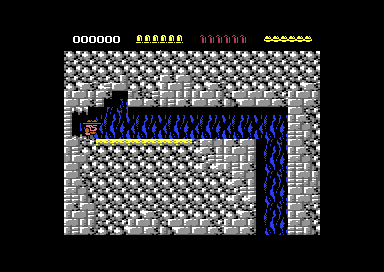

<meta charset="utf-8">
<meta name="viewport" content="width=device-width, initial-scale=1">
<title>Rick Dangerous</title>
<link rel="preconnect" href="https://fonts.googleapis.com">
<link rel="stylesheet" href="https://fonts.googleapis.com/css2?family=Lato:wght@400;700;900&family=IBM+Plex+Mono:wght@400;500&display=swap">
<style>
:root{
  --bg:#23262d; --paper:#e9e7e1; --surface:#ffffff; --surface-2:#f1efea; --line:#d5d3cc; --line-soft:#e0ded8;
  --ink:#2f3136; --ink-soft:#55585f; --ink-mute:#80838a;
  --link:#1f5fa8; --link-hover:#154480; --accent:#1f5fa8;
  --amber:#c25a00; --cyan:#1f5fa8; --coral:#d04a3a; --green:#2a8a4a; --violet:#4a5bd6; --hl:#fff0c2;
  --chip:#2f3136; --chip-ink:#ffffff;
  --c64blue:#40318d; --c64grey:#686868;
  --fd:'Lato',system-ui,sans-serif; --fb:'Lato',system-ui,sans-serif; --fm:'IBM Plex Mono',ui-monospace,Menlo,monospace;
  --col:1080px; --gx:68px; --fs:17px; --lh:1.6; --hw:900; --h1:46px; --h2:26px; --sy:48px; --pp:26px; --r:10px;
  --plate-shadow:0 1px 2px rgba(0,0,0,.05),0 4px 14px rgba(0,0,0,.05);
}
*{box-sizing:border-box}
html{background:var(--bg);min-height:100%}
body{background:var(--paper);color:var(--ink);font-family:var(--fb);font-size:var(--fs);line-height:var(--lh);max-width:var(--col);margin:0 auto;min-height:100vh;padding:0 0 4rem}
h1,h2,h3{font-weight:var(--hw);letter-spacing:-.01em;text-wrap:balance;color:var(--ink);margin:0}
.wrap{padding:0 var(--gx)}
.hero{padding:48px var(--gx) 8px;text-align:left}
.eyebrow{font-family:var(--fm);font-size:12px;letter-spacing:.08em;text-transform:uppercase;color:var(--ink-mute);margin:0 0 10px}
.hero h1{font-size:var(--h1);line-height:1.15;letter-spacing:-.02em;margin:0 0 14px}
.hero .sub{margin:0 0 .6em;color:var(--ink-soft)}
section{padding:var(--sy) 0 24px}
section:last-of-type{border-bottom:none}
.fig{font-family:var(--fm);font-size:12px;letter-spacing:.08em;text-transform:uppercase;color:var(--ink-mute);margin:0 0 10px}
h2.t{font-size:var(--h2);margin-bottom:12px}
.lede{color:var(--ink-soft);margin:0 0 30px}
.plate{background:var(--surface);border:1px solid var(--line);border-radius:var(--r);padding:var(--pp);box-shadow:var(--plate-shadow)}
.cap{font-size:14px;color:var(--ink-mute);margin-top:14px;line-height:1.55}
.cap b{color:var(--ink);font-weight:700}
code{font-family:var(--fm);font-size:.82em;background:var(--chip);color:var(--chip-ink);border-radius:4px;padding:2px 6px;white-space:nowrap}
.rd-shot{display:block;width:100%;max-width:768px;height:auto;image-rendering:pixelated;margin:0 auto;border-radius:4px}
.rd-pair{display:grid;grid-template-columns:1fr 1fr;gap:16px}
@media (max-width:640px){.rd-pair{grid-template-columns:1fr} :root{--gx:16px}}
table.rd-tab{border-collapse:collapse;width:100%;font-size:15px}
table.rd-tab td,table.rd-tab th{border-bottom:1px solid var(--line-soft);padding:6px 8px;text-align:left;vertical-align:top}
table.rd-tab th{font-weight:700;color:var(--ink-soft)}
table.rd-tab td.rd-n{text-align:right;font-family:var(--fm)}
.rd-stack{position:relative;max-width:768px;margin:0 auto}
.rd-stack canvas{display:block;width:100%;height:auto;image-rendering:pixelated}
.rd-stack canvas.rd-over{position:absolute;left:0;top:0}
.rd-ctl{display:flex;flex-wrap:wrap;gap:8px;align-items:center;margin:14px 0 0}
.rd-ctl button,.rd-ctl label{font:inherit;font-size:14px}
.rd-ctl button{border:1px solid var(--line);background:var(--surface-2);border-radius:6px;padding:4px 10px;cursor:pointer}
.rd-ctl button[aria-pressed="true"]{background:var(--chip);color:var(--chip-ink)}
.rd-key{display:flex;flex-wrap:wrap;gap:10px 18px;font-size:14px;margin-top:10px}
.rd-key span{display:inline-flex;align-items:center;gap:6px}
.rd-key i{display:inline-block;width:14px;height:14px;border-radius:3px}
.rd-out{font-family:var(--fm);font-size:15px;margin-top:12px;min-height:3em}
.rd-out b{font-size:18px;letter-spacing:.1em}
.rd-wide{display:block;width:100%;max-width:768px;height:auto;image-rendering:pixelated;margin:0 auto;background:#10131a;border-radius:4px}
.rd-fig{margin:0}.rd-fig figcaption{font-family:var(--fm);font-size:13px;color:var(--ink-soft);margin-bottom:6px;min-height:1.6em}
</style>
<!-- tabs -->
<header class="hero">
  <p class="eyebrow">Commodore 64 · 1989 · Firebird</p>
  <h1>Rick Dangerous</h1>
  <p class="sub">Core Design's platform game of traps, sticks and dynamite. Rick jumps, rooms scroll and boulders roll to a beat of 25 steps a second, and ten objects share six sprites. What the game hides, from two names in its Hall of Fame that change the game to a line of its own source code, is on <a href="discoveries.html">Discoveries</a>.</p>
</header>
<main class="wrap">

<section>
  <p class="fig">01 · The game</p>
  <h2 class="t">An explorer in 1945</h2>
  <p>Rick Dangerous is an explorer in 1945, crashed in the Amazon among the Goolu tribe. The game takes him through four places: a cave in South America, a pyramid in Egypt, Schwarzendumpf Castle in Europe, and a secret missile base aimed at London. Each is a single tall map of rooms, which Rick crosses by walking, jumping, climbing and crawling.</p>
  <p>Almost everything in a room can kill him: the tribesmen and guards who walk the rooms, and above all the traps, which the manual declines to explain. Rick carries a pistol, a stick for jabbing, and dynamite, and he starts with six lives, six bullets and six sticks. A touch from an enemy or a trap costs a life, and he starts again where he entered the room.</p>
  <div class="plate rd-pair"><p class="cap" style="grid-column:1/-1">The title screen, and the first room of the cave. The panel shows the score, the bullets, the dynamite and the lives as hats.</p></div>
</section>

<section id="frame">
  <p class="fig">02 · One frame</p>
  <h2 class="t">What the game sees in a room</h2>
  <p>The picture below is drawn by this page from the memory of one frame of play, recorded in the emulator: the screen, the character set and the video chip's registers as they change during the frame. Every one of its 104,448 pixels matches the emulator's own picture.</p>
  <div class="plate"><div class="rd-stack"><canvas id="rd-frame"></canvas><canvas id="rd-over" class="rd-over"></canvas></div>
    <div class="rd-ctl"><button type="button" id="rd-overbtn" aria-pressed="false">Show what each tile is</button></div>
    <div class="rd-key" id="rd-key" hidden></div>
    <p class="cap">Drawn by the site's C64 renderer from the recorded frame, pixel for pixel the emulator's picture. The overlay takes each tile's code from the screen and looks it up the way <code>$4081</code> does, with the eight codes of graphics set 0 from <code>$185B</code>.</p></div>
  <p>The room is made of characters, and the game decides what each one is by its code alone. Eight codes in zero page (<code>$38</code>-<code>$3F</code>, copied from <code>$185B</code> for each graphics set) mark where each kind begins: background first, then ladders, deadly tiles, scenery that stands in front of Rick, platforms, springy floors (<a href="discoveries.html#trampoline">Discoveries</a>), ordinary floors and walls, and the tops of ladders. <code>$4081</code> turns those eight numbers into a table of 256 flags at <code>$0600</code>, and every collision test reads it. The tile graphics only have to be kept in that order.</p>
</section>

<section>
  <p class="fig">03 · The beat</p>
  <h2 class="t">The game takes a step every second frame</h2>
  <p>A PAL C64 draws 50 frames a second, and Rick Dangerous works to two beats. The picture is kept by the raster interrupt (<code>$3A0D</code>), which the video chip calls at chosen lines of every frame. The game is played by the main loop (<code>$0A0A</code>), outside any interrupt. The loop waits until the frame counter that the interrupt counts up (<code>$07</code>) is even, then takes one step of play. So Rick, the enemies and the traps move 25 times a second, while the sprites, the colours and the sound are kept up 50 times a second.</p>
  <p>The interrupt works down a short list of handlers (<code>$3B9D</code>). Each handler has its own raster line in a table (<code>$3BD7</code>), and before it returns the interrupt sets the line of the next one. The list is picked again every frame: with more objects in view than sprites, one or two handlers go in the middle, at lines that follow the objects, and during a scroll two other handlers take over.</p>
  <div class="plate"><div class="rd-stack" style="max-width:576px"><canvas id="rd-beat"></canvas></div>
    <div class="rd-ctl" id="rd-beatbtn"></div>
    <table class="rd-tab" id="rd-beattab" style="margin-top:12px"></table>
    <p class="cap">The recorded frame from section 02, with the lines at which each handler of the chosen list runs. The lists and the lines are read from the listing (<code>$3B9D</code>, <code>$3BA7</code>, <code>$3BD7</code>). The two lines marked "follows the objects" are put where the bottoms of the second and fourth sprite in height order fall, so they move every frame; here they are drawn at an example height.</p></div>
  <p>One step calls, in order, Rick's move (<code>$0B2A</code>), the exits and the scroll (<code>$186F</code>, <code>$3018</code>), every object (<code>$1990</code>), the bullet, the dynamite, the room bonus, the panel's sprites, the masked sprite images (<code>$0F83</code>) and the panel. Nothing in the step waits for the beam. In the emulator, 141 steps took 284 frames.</p>
</section>

<section id="move">
  <p class="fig">04 · Rick on his feet</p>
  <h2 class="t">Rick jumps 33 pixels high, in eleven steps</h2>
  <p>Rick's vertical speed is kept in whole pixels and 256ths of a pixel (<code>$39B5</code>, <code>$39A9</code>). Each step adds the speed to his height and then half a pixel to the speed, up to eight pixels a step (<code>$0B82</code>). A jump sets the speed to 5½ pixels upwards (<code>$0D2D</code>). Eleven steps later the speed has run out and he is 33 pixels up.</p>
  <p>Walking is two pixels a step to the left or right, with no run-up and no slowing down (<code>$0E64</code>). The stick is read again every step, in the air as on the ground, so a jump can be steered or turned round in mid-flight.</p>
  <div class="plate"><canvas id="rd-move" class="rd-wide"></canvas>
    <div class="rd-ctl" id="rd-movebtn"></div>
    <div class="rd-out" id="rd-moveout"></div>
    <p class="cap">Rick's height at each step, from left to right, the numbers counting steps; yellow in the air, green on the floor. Drawn by <code>rickStep</code>, a port of <code>$0B2A</code> and <code>$0C92</code> for open ground. <code>test_move.js</code> holds it to the game's own code run in the kit's simulator on the first room with its ceiling taken away: 400 runs of 80 steps of random stick, on both kinds of floor, the same position and speed at every step.</p></div>
  <p>Before each move the game tests the tiles at the new place (<code>$3F04</code>). A move that runs into a solid tile is tried again without its sideways part, so Rick slides down a wall rather than sticking to it. Rising into a ceiling turns the speed into a fall of half a pixel a step. Falling onto a floor lands him: his height is put back on the row of tiles (<code>$0C20</code>) and his speed set to one pixel down. On the next step that pixel is blocked again, so a Rick standing still is landing on the floor 25 times a second. One kind of floor does not land him at all: "Springy floor" above shows it (<a href="discoveries.html#trampoline">Discoveries</a>).</p>
</section>

<section>
  <p class="fig">05 · The rooms</p>
  <h2 class="t">Each level is one tall map</h2>
  <p>A level is a column of map rows, eight bytes each, from <code>$9200</code> to <code>$A5BF</code>. Each byte is the number of a block, and each of the 256 blocks at <code>$8200</code> is four rows of four tiles. So a map row is 32 tiles across, the width of the play area, and four tiles deep. The screen shows six map rows; when Rick climbs near the top or the bottom, the view scrolls two map rows (64 pixels) as eight shifts of one row (<code>$3018</code>, <code>$30A3</code>), each drawn on a hidden screen (section 06).</p>
  <p>The Maps tab draws all four levels from these bytes. Levels 1 and 2 use one tile set and levels 3 and 4 another; <code>$1911</code> swaps them, exchanging 2 KB of graphics between <code>$7000</code> and the RAM under the I/O chips.</p>
</section>

<section>
  <p class="fig">06 · The scroll</p>
  <h2 class="t">The scroll is drawn on a hidden screen</h2>
  <p>When Rick climbs near the top of the screen (his height under <code>$60</code>) or drops near the bottom (<code>$CC</code> and over), play stops for a third of a second while the view moves two map rows, 64 pixels (<code>$3018</code>, <code>$30A3</code>). The game keeps two screens, at <code>$C000</code> and <code>$C400</code>. While the video chip shows one, the main program copies the play area into the other one row of tiles further on, with the next row of the map coming in at the edge (<code>$3132</code>). The raster interrupt then points the chip at the new screen (<code>$3AE8</code>), and the two change places. Eight shifts of eight pixels take sixteen frames.</p>
  <div class="plate"><div class="rd-pair"><figure class="rd-fig"><figcaption id="rd-scrA"></figcaption><canvas id="rd-scroll0" class="rd-wide"></canvas></figure><figure class="rd-fig"><figcaption id="rd-scrB"></figcaption><canvas id="rd-scroll1" class="rd-wide"></canvas></figure></div>
    <div class="rd-ctl"><button type="button" id="rd-sprev">◀</button><button type="button" id="rd-snext">▶</button><button type="button" id="rd-splay">Play</button><span id="rd-sframe"></span></div>
    <div class="rd-out" id="rd-sout"></div>
    <p class="cap">The first rooms of South America scrolling up, drawn from the map. Each frame's screen and job come from the tables the scroll's raster handler reads (<code>$3AE0</code>, <code>$3AE4</code>, <code>$3AE8</code>) with the frame count <code>$15</code> running from 15 down to 0.</p></div>
  <p>The colour RAM cannot be kept twice: the chip has only one. Its rows are copied one row on from the raster handler at the bottom of the screen, as the screens swap (<code>$32B0</code>, <code>$34C6</code>). In the frames between, the objects move eight pixels to keep up (<code>$3E55</code>).</p>
</section>

<section>
  <p class="fig">07 · Traps</p>
  <h2 class="t">Every trap says what sets it off</h2>
  <p>Each object in a room has a record of five bytes in the object lists (<code>$A5C0</code>): where it is, its type, and a byte of flags. For a trap, four of the flags say what sets it off: Rick walking into its zone, the stick, a bullet, or an explosion (<code>$1A72</code>). One more makes it deadly to touch while it moves and another while it waits, and one pays 1000 points and removes it when its movement ends.</p>
  <div class="plate"><table class="rd-tab" id="rd-traps"></table>
    <p class="cap">Counted by this page from the object lists in the listing: the records of types 24 to 70, the traps, in the rooms of each level.</p></div>
  <p>That is why the manual warns that the gun is often a trigger rather than a weapon. A trap with only the bullet flag goes off at nothing but a shot.</p>
</section>

<section>
  <p class="fig">08 · The boulder</p>
  <h2 class="t">The boulder in the first room follows a script</h2>
  <p>A trap does not think. Once it goes off, it plays a script from a table with one entry for each trap type (<code>$B880</code>): records of three bytes, a count and a step across and down, repeated that many times, until <code>$FF</code> (<code>$1B0B</code>). A step that would take it past the side of the room or out of its 320 lines ends the script early. At the end the trap goes back to where it started and waits again or, with bit 0 of its flags, pays 1000 points and is gone. Its frames change every fourth step, from a list of their own.</p>
  <div class="plate"><div class="rd-stack"><canvas id="rd-boulder"></canvas></div>
    <div class="rd-ctl"><button type="button" id="rd-bplay">Set it off</button></div>
    <div class="rd-out" id="rd-bout"></div>
    <p class="cap">The recorded frame of the first room, with the path of trap type 42 from where the game had placed it in that frame (object 5). Drawn by <code>trapRun</code>, a port of <code>$1ACF</code>; <code>test_trap.js</code> holds it to the game's own code for all 47 trap types, every step's position and frame.</p></div>
  <p>The boulder of the manual's drawing is type 42 (<code>$44B6</code>). It waits at the far left of the first room, level with Rick, drawn with the blank frame <code>$AB</code>, until he walks into its zone. Its script has nine records: right for 96 steps at two pixels a step, a drop, back to the left, another drop. The boulder never finishes it. On the seventh record, its third drop, it reaches the bottom of the 320 lines an object can be in, and that ends the script.</p>
  <p>The enemies have no scripts. Their handler (<code>$11AB</code>) walks each one two pixels a step towards Rick's column, takes a ladder when Rick is above or below it, lets it fall where there is no floor and turns it at walls. The stick stuns an enemy for 25 steps; a bullet or an explosion kills it for 50 points.</p>
</section>

<section>
  <p class="fig">09 · Sprites</p>
  <h2 class="t">Rick walks behind the scenery</h2>
  <p>A C64 sprite can be set behind the background, but then it is behind every foreground pixel on the screen at once, and Rick has to pass behind some tiles and in front of others. So Rick Dangerous builds his picture again every frame (<code>$0F83</code>): it takes his 64-byte frame and ANDs it with a mask made from the tiles behind him (<code>$1052</code>), clearing every pixel where a tile of the "in front" kind stands. The dynamite and up to three enemies get the same treatment. The finished pictures go into one of two sets of buffers, <code>$C800</code> or <code>$CA00</code>, by turns, so the video chip never shows a half-drawn one.</p>
  <p>The bullet is not a sprite at all: <code>$2ABA</code> writes a character into the screen, keeping the one it covers, and moves it eight pixels a step.</p>
</section>

<section id="sprites">
  <p class="fig">10 · Sprites</p>
  <h2 class="t">Ten objects share six sprites</h2>
  <p>The C64 has eight hardware sprites. Rick takes two, laid one over the other, which leaves six for the objects of a room: enemies, traps, treasures and the dynamite, ten slots in all. Once a frame, at line 240, <code>$3559</code> sorts the ten by height, and the six highest get sprites 2 to 7. A seventh and eighth object lower down get sprites 2 and 3 again: a raster handler waits until the beam is below the second of the six (<code>$3831</code>) and moves the two sprites down to them. A ninth and tenth get sprites 4 and 5 the same way, below the fourth (<code>$387D</code>), and lose the ninth bit of their X on the way: "Show the bug" below sets up a room where it shows (<a href="discoveries.html#ninth-bit">Discoveries</a>).</p>
  <div class="plate"><canvas id="rd-mux" class="rd-wide"></canvas>
    <div class="rd-ctl" id="rd-muxbtn"></div>
    <div class="rd-out" id="rd-muxout"></div>
    <p class="cap">A room of random objects, on the play area in sprite coordinates. Drawn by <code>multiplex</code>, a port of <code>$3559</code>, <code>$36D9</code> and the handlers at <code>$3831</code> and <code>$387D</code>; <code>test_mux.js</code> holds it to the game's own code on 3,000 random rooms: the order, the sprites, the split lines and the ninth X bits.</p></div>
</section>

<section>
  <p class="fig">11 · Music</p>
  <h2 class="t">Music: seven tunes by Dave Pridmore</h2>
  <p>A tune plays on each story screen before a level, on the ending, on the title and Hall of Fame, and on GAME OVER. None plays during play: while a tune runs, the sound effects and Rick's footsteps are silent (<code>$4F86</code>).</p>
  <div class="plate"><div id="rd-music"></div>
    <p class="cap">The game's own music player, its code (<code>$5042</code>-<code>$5730</code>) and the tunes' data (<code>$5732</code>-<code>$5F8D</code>) as the listing holds them, run once a frame on the kit's 6502 simulator in this page, through the site's model of the SID. <code>test_music.js</code> compares every SID write of every frame of all seven tunes with the same code called on the simulator directly: 117,097 writes. The tunes do not use the filter.</p></div>
  <p>Each tune has a header of three addresses at <code>$5732</code>, one track list a voice. A track list is a run of pattern numbers with a few commands mixed in (transpose, repeat, change an instrument); a pattern is notes and their lengths, rests, and changes of instrument, arpeggio and slide. Tunes 5 and 6 leave voice 3 alone.</p>
</section>

<section>
  <p class="fig">12 · The tape</p>
  <h2 class="t">One load</h2>
  <p>The cassette loads once. A turbo loader puts up NOW LOADING ... RICK DANGEROUS and reads the whole game into memory, all four levels, the ending's text and every tune; nothing is loaded again. The game's first instruction is at <code>$0810</code>.</p>
</section>
</main>
<footer style="margin:16px 0 0;padding:22px var(--gx) 0;border-top:1px solid #e0ded8;font-family:'IBM Plex Mono',ui-monospace,Menlo,monospace;font-size:12px;color:#80838a"><a href="https://github.com/gamesexplained/gamesexplained" style="color:#1f5fa8;text-decoration:none">GitHub</a> · <a href="https://discord.gg/3V9GWyRDWV" style="color:#1f5fa8;text-decoration:none">Discord</a><br>© Games Explained contributors. Write-ups, facts and symbol maps are available under <a href="https://creativecommons.org/licenses/by-sa/4.0/" style="color:#1f5fa8;text-decoration:none">CC BY-SA 4.0</a>; code under <a href="https://opensource.org/licenses/MIT" style="color:#1f5fa8;text-decoration:none">MIT</a></footer>
<script src="../../lib/c64.js"></script>
<script src="../../lib/sid.js"></script>
<script src="../../lib/cpu6502.js"></script>
<script>
/* rd-music */
// The game's own music player, run on the kit's 6502 (C64Cpu, from ../../lib/cpu6502.js, which
// sid.js passes to createDriver): the bytes $4FCC-$5F8D (the player's variables, its code at
// $5042-$5730 and the tunes' data) as the game loads them, and zero page $A0-$A5. init(t) calls
// tune_start ($567D) with A = t, as play_tune ($4FC6) does; play() calls tune_play ($5042) once,
// as the raster interrupt does each frame. A read of the SID returns the last value written to it
// (the bus), and a read-modify-write on a SID register writes the old value back before the new
// one, as the chip sees it.
function createDriver(D, C64Cpu) {
  'use strict';
  const m = new Uint8Array(0x10000);
  for (let i = 0; i < D.hex.length / 2; i++) m[D.base + i] = parseInt(D.hex.substr(2 * i, 2), 16);
  const sid = new Uint8Array(25);
  let writes = [], bus = 0;
  const isSid = (ad) => ad >= 0xD400 && ad <= 0xD41F;
  const cpu = new C64Cpu.CPU(m, { port: 0x35, io: {          // the chips at $D000-$DFFF
    read: (ad) => (isSid(ad) ? bus : m[ad]),
    write(ad, val) {
      if (isSid(ad)) { const r = ad - 0xD400; if (r < 25) { sid[r] = val; writes.push(r, val); } bus = val; }
      else m[ad] = val;
    },
  } });
  return {
    sid, m,
    get writes() { return writes; },
    init(t) { writes = []; cpu.call(0x567D, { a: t }); },
    stop() { m[0x4FCC] = 0; },
    play() { writes = []; if (m[0x4FCC]) cpu.call(0x5042, { a: 0 }); },
    playing() { return m[0x4FCC] !== 0; },
    voice(k) { return { note: m[0x503E + k] }; },
  };
}
// end of createDriver

/* rd-tiles */
// What a tile code is, as $4081 builds the table at $0600: eight thresholds (the first code of each
// range) and the flags of each range, from the last; codes $FE and $FF get none.
const RD_KINDS = [
  { f: 0x01, k: 'background', c: 'rgba(0,0,0,0)' },
  { f: 0x02, k: 'ladder', c: 'rgba(60,200,80,.55)' },
  { f: 0x04, k: 'deadly', c: 'rgba(230,40,40,.7)' },
  { f: 0x08, k: 'in front of Rick', c: 'rgba(70,110,255,.5)' },
  { f: 0x18, k: 'platform in front', c: 'rgba(150,80,255,.55)' },
  { f: 0x60, k: 'springy floor', c: 'rgba(255,40,200,.7)' },
  { f: 0x48, k: 'floor and wall', c: 'rgba(255,170,0,.55)' },
  { f: 0x82, k: 'top of a ladder', c: 'rgba(0,230,230,.7)' },
];
function tileKind(code, T) {
  if (code > 0xFD) return -1;
  let k = -1;
  for (let i = 0; i < 8; i++) if (code >= T[i]) k = i;
  return k;
}
// end of tileKind

/* rd-move */
// One step of Rick on foot, as move_rick ($0B2A) and rick_actions ($0C92) take it, on open ground
// with a floor under him: he stands at Y = floor, and every place lower than that is solid. The
// floor is an ordinary one (flag $48) or a springy one (flag $60, $0BD5). s: {x, y, yf, vs, vf, gr}
// with the vertical speed vs (whole pixels, signed) and vf (256ths), as $39B5 and $39A9 hold it;
// stick: bit 0 up, 2 left, 3 right, as $40. Fire, down and ladders are left out.
function rickStep(s, stick, springy, floor) {
  const free = (ny) => ny <= floor;
  let hs = 0;
  if ((stick & 12) === 4) hs = -2; else if ((stick & 12) === 8) hs = 2;      // $0E64
  s.gr = 0;
  const nx = (s.x + hs) & 0xFF;
  const f = s.yf + s.vf, ny = s.y + s.vs + (f > 255 ? 1 : 0), nyf = f & 255;
  let move = false;
  if (free(ny)) { s.x = nx; move = true; }                                   // $0B7B
  else if (s.x !== nx && free(ny)) move = true;                              // $0BC5: never differs here
  if (move) {                                                                // $0B82: gravity, half a pixel a step, at most 8
    const g = s.vf + 0x80;
    s.vf = g & 255; s.vs += g > 255 ? 1 : 0;
    if (s.vs >= 8) { s.vf = 0; s.vs = 8; }
    s.y = ny; s.yf = nyf;
  } else {
    if (s.vs < 0) { s.vs = 0; s.vf = 0x80; }                                 // $0C68: a ceiling
    else if (!springy) {                                                     // $0C20: lands
      s.yf = 0; s.vf = 0; s.vs = 1; s.y = (s.y & ~7) | 3; s.gr = 1;
    } else if ((s.vf | (s.vs & 0xFF)) === 1) s.gr = 1;                       // $0BDF: standing
    else if (stick & 1) { s.vs = -8; s.vf = 0; }                             // $0BED: up held, -8
    else {                                                                   // $0BFE: thrown back up
      const lo = 0xFE - s.vf, borrow = lo < 0 ? 1 : 0;
      s.vf = lo & 255; s.vs = -s.vs - borrow;
      s.yf = 0; s.y = (s.y & ~7) | 3;
    }
    if (free(s.y)) s.x = nx;                                                 // $0C72
  }
  if (s.gr && (stick & 1)) { s.vf = 0x80; s.vs = -6; }                       // $0D2D: a jump, -5.5
  return s;
}
// end of rickStep

/* rd-trap */
// A trap's run, step by step, as trap_run ($1ACF) takes it once it has gone off: its script (the
// address from $B880/$B900 for its type) is records of three bytes from the second byte on, a
// count and the X and Y step (signed) to add that many times, ended by $FF; its frames (from
// $B780/$B800) change every fourth step, going back to the second when they reach $FF. A move that
// would take it past the left or right edge (X under 4 or from $E6) or out of the room's 320 lines
// ends the run early. Returns each step's X, Y and frame, and how the run ended.
function trapRun(ram, type, x, y) {
  const sc = ram[0xB880 + type] | (ram[0xB900 + type] << 8);
  const fl = ram[0xB780 + type] | (ram[0xB800 + type] << 8);
  const animated = ram[fl + 1] !== 0xFF;
  const out = [];
  let idx = 0xFE, count = 0, tick = 3, frame = ram[fl];
  for (let n = 0; n < 2000; n++) {
    if (animated) {                                              // $1AD4
      tick = (tick + 1) & 0xFF;
      if ((tick & 3) === 0) {
        let f = ram[fl + (tick >> 2)];
        if (f === 0xFF) { tick = 4; f = ram[fl + 1]; }
        frame = f;
      }
    }
    if (count === 0) {                                           // $1B1A: the next record
      idx = (idx + 3) & 0xFF;
      if (ram[sc + idx] === 0xFF) return { steps: out, end: 'script' };
      count = ram[sc + idx];
    }
    count--;
    const dx = ram[sc + idx + 1], dy = ram[sc + idx + 2];
    const nx = (x + dx) & 0xFF;                                  // $1B88
    if (dx & 0x80 ? nx < 4 : nx >= 0xE6) return { steps: out, end: 'edge' };
    x = nx;
    const ny = y + (dy & 0x80 ? dy - 256 : dy);                  // $1BA6: nine bits, 0 to $13F
    if (ny < 0 || ny > 0x13F) return { steps: out, end: 'edge' };
    y = ny;
    out.push({ x, y, frame });
  }
  return { steps: out, end: 'long' };
}
// end of trapRun

/* rd-mux */
// The sprite multiplexer: sprite_sort ($3559) and sprites_place ($36D9) once a frame, and the two
// raster handlers that reuse sprites lower down ($3831, $387D). o: {order, y, x, shown}: order the
// ten object numbers (2 to 11) as $B5CA keeps them from the last frame, and per object 0 to 11 its
// sprite Y ($B580), X ($B58C) and whether it is shown ($B5BC). keep: the bytes $397C and $397D,
// which nothing writes. Returns the new order, the objects on sprites 2 to 7, up to four reused
// (on sprites 2, 3, 4 and 5 again), the start of the raster list ($3A42), the two split lines, and
// the ninth X bits ($D010) the chip gets at the top, after the first split and after the second.
function multiplex(o, keep) {
  const order = o.order.slice(), sy = order.map((n) => o.y[n]);
  for (let y = 0; y < 9; y++) {                                  // $3574: an insertion sort by Y
    if (sy[y + 1] >= sy[y]) continue;
    [sy[y], sy[y + 1]] = [sy[y + 1], sy[y]]; [order[y], order[y + 1]] = [order[y + 1], order[y]];
    for (let k = y; k > 0 && sy[k] < sy[k - 1]; k--) {
      [sy[k], sy[k - 1]] = [sy[k - 1], sy[k]]; [order[k], order[k - 1]] = [order[k - 1], order[k]];
    }
  }
  let start = 0;                                                 // $35CD: skip up to four hidden
  while (start < 4 && !o.shown[order[start]]) start++;
  const sprites = order.slice(start, start + 6), sx = {};
  const objs = [0, 1].concat(sprites);                           // $35F0: sprites 0 to 7
  let msb = 0;
  objs.forEach((n, i) => { const v = o.x[n] + 0x38; sx[n] = v & 0xFF; if (v > 0xFF) msb |= 1 << i; });
  const reuse = [], bit = [];
  let at = start + 6, listStart = 0;
  const chain = [msb, 0, 0, keep[0], keep[1], 0, 0];            // $3978, $397A, $397B, $397C, $397D, $3980, $3981
  const from = [0, 1, 2, 3], to = [1, 2, 5, 6], mask = [4, 8, 0x10, 0x20];
  for (let k = 0; k < 4 && at < 10 && o.shown[order[at]]; k++, at++) {
    const n = order[at], v = o.x[n] + 0x38;
    sx[n] = v & 0xFF; reuse.push(n);
    if (k === 0) listStart = 2; if (k === 2) listStart = 5;
    chain[to[k]] = (chain[from[k]] & ~mask[k]) | (v > 0xFF ? mask[k] : 0);   // $397B feeds $3980, $397C $3981
  }
  const split1 = (sy[start + 1] + 0x15) & 0xFF;                  // $36B9: below the second object
  let split2 = (sy[start + 3] + 0x15) & 0xFF;
  if (split2 === split1) split2 = (split2 + 3) & 0xFF;
  chain[5] = chain[3]; chain[6] = chain[4];                      // $3725-$372E: $397C over $3980, $397D over $3981
  let ab = reuse.length ? (reuse.length > 1 ? chain[2] : chain[1]) : chain[0];
  let cd = ab;
  if (reuse.length > 2) cd = (cd & ~0x10) | chain[5];
  if (reuse.length > 3) cd = (cd & ~0x20) | chain[6];
  return { order, sprites, reuse, listStart, split1, split2, sx, msb, msbAB: ab, msbCD: cd };
}
// end of multiplex

</script>
<script>
(async function () {
  const F = {"schema":1,"standard":"PAL","lines":312,"cycles":63,"about":"","vic":[72,133,72,133,64,125,56,133,88,249,184,249,152,249,168,249,0,27,0,0,0,255,216,0,15,118,241,0,254,0,15,3,240,240,251,252,243,251,250,240,248,240,240,241,251,251,248],"cia2":[148,63],"cpu":[47,37],"writes":[[66,38,53272,5],[258,31,50168,40],[258,35,51192,40],[258,49,50169,41],[258,53,51193,41],[265,35,53272,15]],"colour":"AQEBAQgBAQEBAQEICAcHBwcHBwgIAgICAgICCAgHBwcHBwcIAQEBAQEBAQEBAQEBAQEBAQEBAQEBAQEBAQEBAQEBAQEBAQEBAQEBAQEBAQEBAQEBCQkJCQkJCQkJCQkJCQkJCQkJCQkJCQkJCQkJCQkJCQkBAQEBAQEBAQkJCQkJCQkJCQkJCQkJCQkJCQkJCQkJCQkJCQkJCQkJAQEBAQEBAQEJCQkJCQkJCQkJCQkJCQkJCQkJCQkJCQkJCQkJCQkJCQEBAQEBAQEBCQkJCQkJCQkJCQkJCQkJCQkJCQkJCQkJCQkJCQkJCQkBAQEBAQEBAQkJCQkJCQkJCQkJCQkJCQkJCQkJCQkJCQkJCQkJCQkJAQEBAQEBAQEJCQkJCQkBAQkJCQkJCQkJCQkJCQkJCQkJCQkJCQkJCQEBAQEBAQEBCQkJCQkBAQYJCQkJCQkJCQkJCQkJCQkJCQkJCQkJCQkBAQEBAQEBAQkJCQEBBgYGAQEBAQEBAQEBAQEBAQEBAQEBAQEJCQkJAQEBAQEBAQEJAQEBBgYGBgYGBgYGBgYGBgYGBgYGBgYGBgYGCQkJCQEBAQEBAQEBCQEGBgYGBgYGBgYGBgYGBgYGBgYGBgYGBgYGBgkJCQkBAQEBAQEBAQkJCQYGBgYGBgYGBgYGBgYGBgYGBgYGBgYGBgYJCQkJAQEBAQEBAQEJCQkJDw8PDw8PDw8PDw8PCQkJCQkJCQkBBgYGCQkJCQEBAQEBAQEBCQkJCQkJCQkJCQkJCQkJCQkJCQkJCQkJAQYGBgkJCQkBAQEBAQEBAQkJCQkJCQkJCQkJCQkJCQkJCQkJCQkJCQEGBgYJCQkJAQEBAQEBAQEJCQkJCQkJCQkJCQkJCQkJCQkJCQkJCQkBBgYGCQkJCQEBAQEBAQEBCQkJCQkJCQkJCQkJCQkJCQkJCQkJCQkJAQYGBgkJCQkBAQEBAQEBAQkJCQkJCQkJCQkJCQkJCQkJCQkJCQkJCQEGBgYJCQkJAQEBAQEBAQEJCQkJCQkJCQkJCQkJCQkJCQkJCQkJCQkBBgYGCQkJCQEBAQEBAQEBCQkJCQkJCQkJCQkJCQkJCQkJCQkJCQkJAQYGBgkJCQkBAQEBAQEBAQkJCQkJCQkJCQkJCQkJCQkJCQkJCQkJCQEGBgYJCQkJAQEBAQEBAQEJCQkJCQkJCQkJCQkJCQkJCQkJCQkJCQkBBgYGCQkJCQEBAQEBAQEBCQkJCQkJCQkJCQkJCQkJCQkJCQkJCQkJAQYGBgkJCQkBAQEBAQEBAQkJCQkJCQkJCQkJCQkJCQkJCQkJCQkJCQEGBgYJCQkJAQEBAQEBAQEBAQEBAQEBAQEBAQEBAQEBAQEBAQ==","ram":[{"a":49152,"b":"AAAAAAAwMDAwMDAAAAEBAQEBAQAAAgICAgICAAADAwMDAwMAAAAAAAAAAAAAAAAAAAAAAAAAAAAAAAAAAAAAAAAAAAAAAAAAAAAAAAAAAAAAAAAA29zb3Nvc29zb3Nvc29zb3Nvc29zb3Nvc29zb3Nvc29wAAAAAAAAAANna2drZ2tna2drZ2tna2drZ2tna2drZ2tna2drZ2tnaAAAAAAAAAADb3Nvc29zb3Nvc29zb3Nvc29zb3Nvc29zb3Nvc29zb3AAAAAAAAAAA2drZ2tna2fHZ2tna7fDv7tna2drZ2tna2drZ2tna2doAAAAAAAAAANvc7/Db8+3u29zb3PHt7vPb3O/w29zb3Nvc29zb3O/wAAAAAAAAAADx7e7x7/AAAPLw2fPv7vHx8e3u8dnt7u/u7fDa8e3u8QAAAAAAAAAA7e7v8PMAAEjt7u/w8fPt8O3u7/Dx3O3u7e7v8O3u7/AAAAAAAAAAAPM3OAAAOjs8AAAAAAAAAAAAAAAAAAAAAAAAAADt7tnaAAAAAAAAAADzAAAAPT4/QD0+P0A9Pj9APT4/QD0+P0A9Pj9A8e/w3AAAAAAAAAAA8wBDREFCQ0RBQkNEQUJDREFCQ0RBQkNEQUJDRO/y7toAAAAAAAAAAPM1NkhFRkdIRUZHSEVGR0hFRkdIRUZHSEVGR0jz8/HcAAAAAAAAAADt7tna1dbV1tXW1dbV1tXW2e/y7u3w7+4AOjs87e7Z2gAAAAAAAAAA8fPb3NfY19jX2NfY19jX2Nvv8PHx7e7zAD4/QPHv8NwAAAAAAAAAAO7t7trZ2tna2drZ2tna2drZ2vPz7+7x8QBCQ0Tv8u7aAAAAAAAAAADt7tvc29zb3Nvc29zb3Nvc2/Hb7/Hz7fAARkdI8/Px3AAAAAAAAAAA7e7Z2tna2drZ2tna2drZ2tna2drZ7/LuADo7PPHv7vEAAAAAAAAAAPHv8Nzb3Nvc29zb3Nvc29zb3Nvc2+/w8QA+P0Dz8/LyAAAAAAAAAADv8u7a2drZ2tna2drZ2tna2drZ2tna8/MAQkNE7e7t8AAAAAAAAAAA8/Px3Nvc29zb3Nvc29zb3Nvc29zb8dvvAEZHSPHv7vMAAAAAAAAAAO3w7+7Z2tna2drZ2tna2drZ2tna2drZ2gA6Ozzt7tnaAAAAAAAAAADx7e7z29zb3Nvc7/Db3Nvc29zb3Nvc7/AAPj9A8e/w3AAAAAAAAAAA7+7x8dna2drx7e7x2e3u7+7t8Nrx7e7xAEJDRO/y7toAAAAAAAAAAPHz7fDb3Nvc7e7v8PHc7e7t7u/w7e7v8ABGR0jz8/HcAAAAAA=="},{"a":50168,"b":"ICGrq6urq6s="},{"a":51200,"b":"AIAAAf8AAyyAAhBAH//4IAAEH//4BAhABCfAB5CABN5ACFxACECACHuADMCACCEABD4AA8QAAUQAAUIAAUEA"},{"a":51264,"b":"AAAAAAAAAKoAAqqAAAAAKqqoAAAAA//AA/8AAP8AAj/ACr/ACr8ACoQACqoAD+oAA8AAABQAAFQAAFQAAFUA"},{"a":53248,"b":"AAAAAAAAAAA="},{"a":53672,"b":"AAAAABBkteYAAABAgJTZnZ/b2taGQQEBn9va1oZBAQE="},{"a":53712,"b":"HBkREBACIiCABAQGBwMBIYNDAUHBQQMDBASEhMDAgIAgIEBAoMDgwGFgYHExYcGBg4ODgQEBERACAgQMDBwejKBAgUMDQwMDgoCEgIjIwMAgIGBw+PDg8IaGgoDExMTgASAgJGBycDjA4GBgICAgAeFBISMDI4GR"},{"a":54952,"b":"///77prlkAX/++77qqllBkpObn8/LoqaC09LmpaRkECWRih5KVmEkIh5Pbi0ZlYLmk5ufz8umpoPT0ualpGRQg=="},{"a":55144,"b":"//rq6urqqlW5qampqamlVf/66uqq6qlVtZGGkpGpZBH56enp5emllfWl5qamlqZV/umpVf7ppZU="},{"a":60096,"b":"AAAAAAAAAAAAAAAAAAAAAAAAAAAAAAAAAAAAAAAAAAAAAAAAAAAAAAAAAAAAAAAAAAAAAAAAAAAAAAAAAAAA"},{"a":63488,"b":"AAAAAAAAAAA4bHR0dHQA+mCQJDQ0NDQ0ADR6foH/PAA="},{"a":63872,"b":"AD5jY2NjYz4="},{"a":65535,"b":"Og=="}],"capture":{"phase_cycles_uncertain":0,"frame_cycles":19653,"frame_ended_on_line":0,"picture_lines_low":0,"writes_account_for_end_state":true,"ram_bytes_changed_during_frame":37,"colour_cells_changed_during_frame":0}};
  // the frame
  const cv = document.getElementById('rd-frame'), over = document.getElementById('rd-over');
  let L = null;
  try { L = await C64.load('listing.json'); } catch (e) { /* the widgets that read the listing say so below */ }
  if (window.C64) {
    const r = C64.drawFrame(cv, F, 2);
    over.width = cv.width; over.height = cv.height;
    const screen = Uint8Array.from(atob(F.ram[0].b), (ch) => ch.charCodeAt(0));
    const T = L ? Array.from(L.bytes(0x185B, 8)) : [0x00, 0x4D, 0x5B, 0x5F, 0xB6, 0xBE, 0xC1, 0xFC];
    const ctx = over.getContext('2d');
    const btn = document.getElementById('rd-overbtn'), key = document.getElementById('rd-key');
    key.innerHTML = RD_KINDS.slice(1).map((k) => `<span><i style="background:${k.c}"></i>${k.k}</span>`).join('');
    // the screen's top-left in the picture: 32 pixels of border on the left, 35 lines on top
    const X0 = 32 * 2, Y0 = 35 * 2;
    btn.addEventListener('click', () => {
      const on = btn.getAttribute('aria-pressed') !== 'true';
      btn.setAttribute('aria-pressed', String(on)); key.hidden = !on;
      ctx.clearRect(0, 0, over.width, over.height);
      if (!on) return;
      for (let row = 1; row < 25; row++) for (let col = 0; col < 40; col++) {
        const k = tileKind(screen[row * 40 + col], T);
        if (k < 1) continue;
        ctx.fillStyle = RD_KINDS[k].c;
        ctx.fillRect(X0 + col * 16, Y0 + row * 16, 16, 16);
      }
    });
    if (location.hash === '#tiles') btn.click();
  }
  // the music
  const mus = document.getElementById('rd-music');
  if (!window.C64Sid || !window.C64Cpu || !L) mus.textContent = 'The player needs the site\'s sid.js and cpu6502.js and the listing: open this page from the built site.';
  else {
    const hex = Array.from(L.bytes(0x4FCC, 0x5F8E - 0x4FCC), (b) => b.toString(16).padStart(2, '0')).join('');
    C64Sid.mount(mus, { driver: createDriver, data: { base: 0x4FCC, hex },
      tunes: ['South America', 'Egypt', 'Schwarzendumpf Castle', 'Missile base', 'The ending', 'Title and Hall of Fame', 'Game over'] });
  }
  // the traps, counted from the object lists
  const tab = document.getElementById('rd-traps');
  if (!L) tab.innerHTML = '<tr><td>Needs the listing: open this page from the built site.</td></tr>';
  else {
    const ram = L.ram, levelOf = [];
    const firstRoom = [0, 1, 2, 3].map((l) => (ram[0x1980 + l] | ram[0x1984 + l] << 8));
    const counts = [0, 1, 2, 3].map(() => ({ n: 0, rick: 0, stick: 0, bullet: 0, blast: 0, deadly: 0, rest: 0, points: 0 }));
    for (let room = 0; room < 34; room++) {
      const rec = 0x46AD + 7 * room;
      let lv = 0; for (let l = 0; l < 4; l++) if (rec >= firstRoom[l]) lv = l;
      let p = ram[rec + 5] | ram[rec + 6] << 8;
      while (ram[p] !== 0xFF && p < 0xACDC) {
        const type = ram[p + 1] & 0x7F, fl = ram[p + 2];
        if (type >= 24 && type <= 70) {
          const c = counts[lv]; c.n++;
          if (fl & 0x80) c.rick++; if (fl & 0x40) c.stick++; if (fl & 0x20) c.bullet++; if (fl & 0x10) c.blast++;
          if (fl & 0x08) c.deadly++; if (fl & 0x04) c.rest++; if (fl & 0x01) c.points++;
        }
        p += 5;
      }
    }
    const names = ['South America', 'Egypt', 'Schwarzendumpf Castle', 'Missile base'];
    const cols = [['n', 'Traps'], ['rick', 'Rick walks in'], ['stick', 'The stick'], ['bullet', 'A bullet'], ['blast', 'An explosion'], ['deadly', 'Deadly while moving'], ['rest', 'Deadly at rest'], ['points', '1000 points']];
    tab.innerHTML = '<tr><th>Level</th>' + cols.map((c) => `<th>${c[1]}</th>`).join('') + '</tr>' +
      counts.map((c, i) => `<tr><td>${names[i]}</td>` + cols.map((k) => `<td class="rd-n">${c[k[0]]}</td>`).join('') + '</tr>').join('');
  }
  // the beat: the raster lists drawn on the recorded frame
  if (window.C64 && L) {
    const bc = document.getElementById('rd-beat'), ram = L.ram;
    const fr = C64.drawFrame(bc, F, 1), bctx = bc.getContext('2d');
    const base = bctx.getImageData(0, 0, bc.width, bc.height);
    const SAY = {
      0: 'Moves sprites 2 and 3 down to the seventh and eighth objects (<code>$3831</code>).',
      1: 'Moves sprites 4 and 5 down to the ninth and tenth objects (<code>$387D</code>).',
      2: 'Waits for line 65, switches to the tiles\' character set and a black background, gives sprites 2 to 7 their frames, and plays the music and the sound effects (<code>$3A43</code>).',
      3: 'Sorts the objects and sets all eight sprites for the next frame, counts the frame, swaps the buffer frames of Rick and the panel every second frame, and switches to the panel\'s character set for the top of the next frame (<code>$3A68</code>).',
      4: 'Waits for line 65, shows one of the two screens for this frame of the scroll, gives sprites 2 to 7 their frames, plays the sound, then lets the main program draw the next shift or moves the objects eight pixels (<code>$3AAB</code>).',
      5: 'Sets the sprites for the next frame, counts the scroll\'s frames down, copies the colour RAM a row on as the screens swap, and goes back to the normal list after the last frame (<code>$3AFE</code>).',
    };
    const LISTS = [['Up to six objects', 0x3B9D], ['Seven or eight', 0x3B9F], ['Nine or ten', 0x3BA2], ['Scrolling up', 0x3BA7]];
    const EXAMPLE = { 0: 140, 1: 185 };
    const list = (at) => { const out = []; for (let k = 0; k < 6; k++) { const h = ram[at + k]; out.push(h); if (h === 3 || h === 5) break; } return out; };
    const lineOf = (h) => (h in EXAMPLE ? EXAMPLE[h] : ram[0x3BD7 + h]);
    const btns = document.getElementById('rd-beatbtn'), tab = document.getElementById('rd-beattab');
    btns.innerHTML = LISTS.map((l, i) => `<button type="button" data-i="${i}">${l[0]}</button>`).join('');
    const show = (i) => {
      btns.querySelectorAll('button').forEach((b) => b.setAttribute('aria-pressed', String(+b.dataset.i === i)));
      const hs = list(LISTS[i][1]);
      bctx.putImageData(base, 0, 0);
      bctx.font = '11px monospace';
      for (const h of hs) {
        const y = lineOf(h) - fr.line0 + 0.5;
        bctx.strokeStyle = h in EXAMPLE ? '#ffd23f' : '#ff4fd8'; bctx.setLineDash(h in EXAMPLE ? [6, 4] : []);
        bctx.beginPath(); bctx.moveTo(0, y); bctx.lineTo(bc.width, y); bctx.stroke();
        const label = `line ${lineOf(h)}` + (h in EXAMPLE ? ', follows the objects' : '');
        bctx.fillStyle = 'rgba(0,0,0,.75)'; bctx.fillRect(2, y - 13, bctx.measureText(label).width + 6, 12);
        bctx.fillStyle = '#fff'; bctx.fillText(label, 5, y - 3);
      }
      bctx.setLineDash([]);
      tab.innerHTML = '<tr><th>Line</th><th>Handler</th></tr>' + hs.map((h) => `<tr><td class="rd-n">${h in EXAMPLE ? 'moves' : lineOf(h)}</td><td>${SAY[h]}</td></tr>`).join('');
    };
    btns.addEventListener('click', (e) => { if (e.target.dataset.i) show(+e.target.dataset.i); });
    show(0);
  }

  // Rick on his feet: rickStep on open ground
  {
    const mc = document.getElementById('rd-move'), out = document.getElementById('rd-moveout');
    const W = 256, H = 112, S = 3, FLOOR = 139, TOP = FLOOR - 82;
    const ctx = C64.canvas(mc, W * S, H * S);
    const SC = { stand: ['Standing jump', 112, () => [1]], run: ['Running jump', 8, (k) => (k === 10 ? 9 : 8)], hold: ['Holding up', 112, () => 1] };
    let pick = 'stand', springy = false;
    const bx = document.getElementById('rd-movebtn');
    bx.innerHTML = Object.entries(SC).map(([k, v]) => `<button type="button" data-k="${k}">${v[0]}</button>`).join('') + '<button type="button" data-spring="1">Springy floor</button>';
    const draw = () => {
      bx.querySelectorAll('button').forEach((b) => b.setAttribute('aria-pressed', String(b.dataset.k ? b.dataset.k === pick : springy)));
      const [, x0, stick] = SC[pick];
      const s = { x: x0, y: FLOOR, yf: 0, vs: 1, vf: 0, gr: 1 }, path = [];
      for (let k = 0; k < 60; k++) {
        const st = typeof stick(k) === 'number' ? stick(k) : (stick(k)[k] || 0);
        rickStep(s, pick === 'stand' ? (k === 0 ? 1 : 0) : st, springy, FLOOR);
        path.push({ x: s.x, y: s.y, gr: s.gr });
        if (s.x >= 0xD8) break;
      }
      ctx.fillStyle = '#10131a'; ctx.fillRect(0, 0, W * S, H * S);
      const py = (y) => (y - TOP) * S;
      ctx.fillStyle = springy ? '#c25a00' : '#55585f'; ctx.fillRect(0, py(FLOOR + 16), W * S, H * S);
      ctx.strokeStyle = 'rgba(255,255,255,.25)'; ctx.setLineDash([3, 5]);
      for (let h = 16; h <= 64; h += 16) { ctx.beginPath(); ctx.moveTo(0, py(FLOOR - h) + .5); ctx.lineTo(W * S, py(FLOOR - h) + .5); ctx.stroke(); }
      ctx.setLineDash([]); ctx.fillStyle = 'rgba(255,255,255,.55)'; ctx.font = '12px monospace';
      for (let h = 16; h <= 64; h += 16) ctx.fillText(h + ' px', 4, py(FLOOR - h) - 3);
      let top = FLOOR, steps = 0, air = false, land = -1;
      ctx.fillStyle = 'rgba(255,255,255,.55)';
      for (let k = 0; k <= 60; k += 10) ctx.fillText(String(k), (8 + 4 * k) * S - 4, py(FLOOR + 14));
      path.forEach((p, k) => {
        ctx.fillStyle = p.gr ? '#7fd17f' : '#ffd23f';
        ctx.fillRect((8 + 4 * (k + 1)) * S - 3, py(p.y) - 3, 6, 6);
        if (p.y < top) { top = p.y; steps = k + 1; }
        if (!p.gr) air = true; else if (air && land < 0) land = k;
      });
      ctx.fillStyle = 'rgba(255,255,255,.85)'; ctx.fillRect(8 * S - 3, py(FLOOR) - 3, 6, 6);
      out.innerHTML = `Highest: <b>${FLOOR - top}</b> pixels up, after ${steps} steps.` + (land > 0 ? ` First back on the floor after ${land + 1} steps, ${Math.abs(path[land].x - x0)} pixels along.` : '') +
        (springy ? ' On the springy floor he does not stop at the landing.' : '');
    };
    bx.addEventListener('click', (e) => { const b = e.target.closest('button'); if (!b) return; if (b.dataset.spring) springy = !springy; else pick = b.dataset.k; draw(); });
    draw();
  }

  // the scroll, frame by frame
  if (L) {
    const ram = L.ram, from = 0x9210, ROWS = 8;
    const map = document.createElement('canvas'), mctx = C64.canvas(map, 256, ROWS * 32);
    const t0 = ram[0x1980] | (ram[0x1984] << 8);
    const mc1 = ram[0x1988] & 15, mc2 = ram[0x198C] & 15, chars = ram.subarray(0xD000, 0xD800);
    for (let r = 0; r < ROWS; r++) {
      const at = from + r * 8, t = new Uint8Array(128);
      for (let b = 0; b < 8; b++) { const k = ram[at + b], p = ram[0xB300 + k] | (ram[0xB400 + k] << 8); for (let i = 0; i < 16; i++) t[(i >> 2) * 32 + b * 4 + (i & 3)] = ram[p + i]; }
      for (let i = 0; i < 128; i++) {
        const code = t[i], col = ram[0x8000 + code], x = (i & 31) * 8, y = r * 32 + (i >> 5) * 8;
        if (col & 8) C64.drawGlyphMC(mctx, chars, code, x, y, 1, [null, C64.PAL[mc1], C64.PAL[mc2], C64.PAL[col & 7]]);
        else C64.drawGlyph(mctx, chars, code, x, y, 1, C64.PAL[col & 15], null);
      }
    }
    void t0;
    const scr = [0, 1].map((i) => C64.canvas(document.getElementById('rd-scroll' + i), 256, 192));
    const cap = [document.getElementById('rd-scrA'), document.getElementById('rd-scrB')];
    const D018 = [0, 1, 2, 3].map((x) => ram[0x3AE8 + x]), JOB = [0, 1, 2, 3].map((x) => ram[0x3AE0 + x] | (ram[0x3AE4 + x] << 8));
    const SIGNALS = [0x3AEC, 0x3AF5];
    let f = 0, timer = null;
    const paint = (i, shift, dim) => {
      const c = scr[i];
      c.drawImage(map, 0, 64 - 8 * shift, 256, 192, 0, 0, 256, 192);
      if (dim) { c.fillStyle = 'rgba(16,19,26,.55)'; c.fillRect(0, 0, 256, 192); }
    };
    const show = () => {
      document.getElementById('rd-sframe').textContent = f < 16 ? `Frame ${f + 1} of 16 ($15 = ${15 - f})` : 'After the scroll';
      if (f === 16) {
        paint(0, 8, false); paint(1, 7, true);
        cap[0].textContent = '$C000: shown, 64 pixels on'; cap[1].textContent = '$C400: hidden';
        document.getElementById('rd-sout').textContent = 'The normal raster list is back, its first handler pointing the chip at $C000 again, and play goes on.';
        return;
      }
      const x = (15 - f) & 3, shownScreen = D018[x] === 0x04 ? 0 : 1, shown = f >> 1, signal = SIGNALS.includes(JOB[x]);
      paint(shownScreen, shown, false);
      paint(1 - shownScreen, shown + 1, true);
      cap[shownScreen].textContent = `${shownScreen ? '$C400' : '$C000'}: shown, ${8 * shown} pixels on`;
      cap[1 - shownScreen].textContent = `${shownScreen ? '$C000' : '$C400'}: hidden, ${signal ? 'being drawn ' + 8 * (shown + 1) + ' pixels on' : 'drawn ' + 8 * (shown + 1) + ' pixels on'}`;
      document.getElementById('rd-sout').innerHTML = (signal ? `The top handler sets <code>$27</code>: the main program starts copying the shown screen into the hidden one, a row of tiles lower.` :
        `The top handler moves every object eight pixels down and sorts them again (<code>$3AEF</code>).`) +
        ((14 - f) & 1 ? ' At the bottom of this frame the colour RAM is copied a row down, ready for the swap.' : '');
    };
    document.getElementById('rd-sprev').addEventListener('click', () => { f = Math.max(0, f - 1); show(); });
    document.getElementById('rd-snext').addEventListener('click', () => { f = Math.min(16, f + 1); show(); });
    document.getElementById('rd-splay').addEventListener('click', () => {
      clearInterval(timer); f = 0; show();
      timer = setInterval(() => { f++; show(); if (f >= 16) clearInterval(timer); }, 160);
    });
    show();
  }

  // the boulder: trap type 42 over the recorded frame
  if (window.C64 && L) {
    const ram = L.ram, bcv = document.getElementById('rd-boulder'), S = 2;
    const fr = C64.drawFrame(bcv, F, S), bctx = bcv.getContext('2d');
    const base = bctx.getImageData(0, 0, bcv.width, bcv.height);
    const SLOT = 5, x0 = ram[0xB58C + SLOT], y0 = ram[0x3991 + SLOT] + 256 * ram[0x399D + SLOT];
    const run = trapRun(ram, 42, x0, y0);
    const mc1 = F.vic[0x25] & 15, mc2 = F.vic[0x26] & 15;
    const px = (x) => (x + 0x38 + 8) * S, py = (y) => (y - 6 - fr.line0) * S;
    const clipTop = (51 - fr.line0) * S, clipBottom = (251 - fr.line0) * S;
    const out = document.getElementById('rd-bout');
    let timer = null;
    const draw = (k) => {
      bctx.putImageData(base, 0, 0);
      bctx.save(); bctx.beginPath(); bctx.rect(32 * S, clipTop, 320 * S, clipBottom - clipTop); bctx.clip();
      bctx.fillStyle = '#ffd23f';
      run.steps.slice(0, k + 1).forEach((p) => bctx.fillRect(px(p.x) + 12 * S - 2, py(p.y) + 10 * S - 2, 4, 4));
      const p = run.steps[Math.min(k, run.steps.length - 1)];
      if (k >= 0 && p.frame !== 0xAB) {
        C64.drawSpriteMC(bctx, L.bytes(0xC000 + p.frame * 64, 63), px(p.x), py(p.y), S, C64.PAL[ram[0xB4D0 + p.frame] & 15], C64.PAL[mc1], C64.PAL[mc2]);
      }
      bctx.restore();
      out.textContent = k < 0 ? `At rest at X ${x0}, Y ${y0}, with the blank frame: nothing shows.` :
        k < run.steps.length - 1 ? `Step ${k + 1}: X ${p.x}, Y ${p.y}.` :
        `Step ${run.steps.length}: X ${p.x}, Y ${p.y}. The next move would take it below line 319 of the room, so the script ends here, ${run.steps.length} steps (${(run.steps.length / 25).toFixed(1)} seconds) after it went off.`;
    };
    document.getElementById('rd-bplay').addEventListener('click', () => {
      clearInterval(timer); let k = 0; draw(0);
      timer = setInterval(() => { k++; draw(k); if (k >= run.steps.length - 1) clearInterval(timer); }, 40);
    });
    draw(-1);
  }

  // ten objects on six sprites
  if (L) {
    const ram = L.ram, mc = document.getElementById('rd-mux'), S = 2, LINE0 = 16;
    const ctx = C64.canvas(mc, 384 * S, 272 * S);
    const keep = [ram[0x397C], ram[0x397D]];
    const COL = { 2: '#ff6b6b', 3: '#ffd23f', 4: '#7fd17f', 5: '#4fc3ff', 6: '#c792ea', 7: '#ff9f43' };
    let seed = 1989;
    const rnd = (n) => { seed = (seed * 1103515245 + 12345) & 0x7FFFFFFF; return seed % n; };
    const room = (n, bug) => {
      const o = { order: [2, 3, 4, 5, 6, 7, 8, 9, 10, 11], y: [], x: [], shown: [] };
      o.y[0] = o.y[1] = 120; o.x[0] = o.x[1] = 100; o.shown[0] = o.shown[1] = 1;
      for (let k = 2; k < 12; k++) {
        o.shown[k] = k - 2 < n ? 1 : 0;
        o.y[k] = o.shown[k] ? 60 + rnd(170) : 0xF9; o.x[k] = rnd(0xE6);
      }
      if (bug) { o.y = [120, 120, 62, 66, 84, 90, 106, 112, 140, 150, 200, 210]; o.x = [100, 100, 20, 120, 60, 170, 30, 140, 90, 40, 214, 120]; o.shown = o.shown.map(() => 1); }
      return o;
    };
    const draw = (o) => {
      const r = multiplex(o, keep);
      ctx.fillStyle = '#10131a'; ctx.fillRect(0, 0, mc.width, mc.height);
      ctx.fillStyle = '#23262d'; ctx.fillRect((24 + 8) * S, (51 - LINE0) * S, 320 * S, 200 * S);
      const sprOf = {}; r.sprites.forEach((n, i) => { sprOf[n] = { s: i + 2, again: false }; }); r.reuse.forEach((n, i) => { sprOf[n] = { s: i + 2, again: true }; });
      ctx.font = `${6 * S}px monospace`;
      [[r.split1, r.reuse.length > 0], [r.split2, r.reuse.length > 2]].forEach(([l, on]) => {
        if (!on) return;
        ctx.strokeStyle = '#ff4fd8'; ctx.setLineDash([6, 4]);
        ctx.beginPath(); ctx.moveTo(0, (l - LINE0) * S + .5); ctx.lineTo(mc.width, (l - LINE0) * S + .5); ctx.stroke(); ctx.setLineDash([]);
        ctx.fillStyle = '#ff4fd8'; ctx.fillText(`line ${l}`, 4, (l - LINE0) * S - 4);
      });
      const msbs = r.msbCD, wrong = [];
      for (let n = 2; n < 12; n++) {
        if (!o.shown[n] || !sprOf[n]) continue;
        const { s, again } = sprOf[n], sx = o.x[n] + 0x38, y = (o.y[n] - LINE0) * S;
        let drawn = sx;
        if (again && s >= 4) drawn = (sx & 0xFF) + ((msbs >> s) & 1 ? 256 : 0);
        ctx.strokeStyle = COL[s]; ctx.lineWidth = 2;
        if (drawn !== sx) {
          ctx.setLineDash([4, 4]); ctx.strokeRect((sx + 8) * S, y, 24 * S, 21 * S); ctx.setLineDash([]);
          ctx.fillStyle = 'rgba(255,60,60,.35)'; ctx.fillRect((drawn + 8) * S, y, 24 * S, 21 * S);
          ctx.strokeStyle = '#ff3c3c'; wrong.push(n);
        }
        ctx.strokeRect((drawn + 8) * S, y, 24 * S, 21 * S);
        ctx.fillStyle = COL[s]; ctx.fillText(`${again ? 'again ' : ''}${s}`, (drawn + 8) * S + 4, y + 9 * S);
        ctx.lineWidth = 1;
      }
      ctx.strokeStyle = '#fff'; ctx.strokeRect((o.x[0] + 0x38 + 8) * S, (o.y[0] - LINE0) * S, 24 * S, 21 * S);
      ctx.fillStyle = '#fff'; ctx.fillText('Rick 0+1', (o.x[0] + 0x38 + 8) * S + 4, (o.y[0] - LINE0) * S + 9 * S);
      document.getElementById('rd-muxout').innerHTML = `Sprites 2 to 7 show the six highest objects. ${r.reuse.length ? `${r.reuse.length} more ${r.reuse.length > 1 ? 'reuse sprites' : 'reuses sprite'} ${r.reuse.map((_, i) => i + 2).join(', ')} below line ${r.reuse.length > 2 ? r.split1 + ' and ' + r.split2 : r.split1}.` : 'No sprite is reused.'}` +
        (wrong.length ? ` <b>The bug:</b> the object outlined in red is drawn 256 pixels left of where it is (dashed), its ninth X bit lost.` : '');
    };
    const bx = document.getElementById('rd-muxbtn');
    bx.innerHTML = [[6, 'Six objects'], [8, 'Eight'], [10, 'Ten'], [0, 'Show the bug']].map(([n, t]) => `<button type="button" data-n="${n}">${t}</button>`).join('');
    bx.addEventListener('click', (e) => { const b = e.target.closest('button'); if (!b) return; const n = +b.dataset.n; draw(n ? room(n) : room(10, true)); });
    draw(room(10));
  }
})();
</script>
